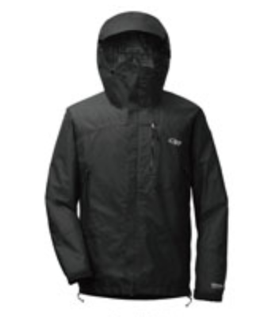
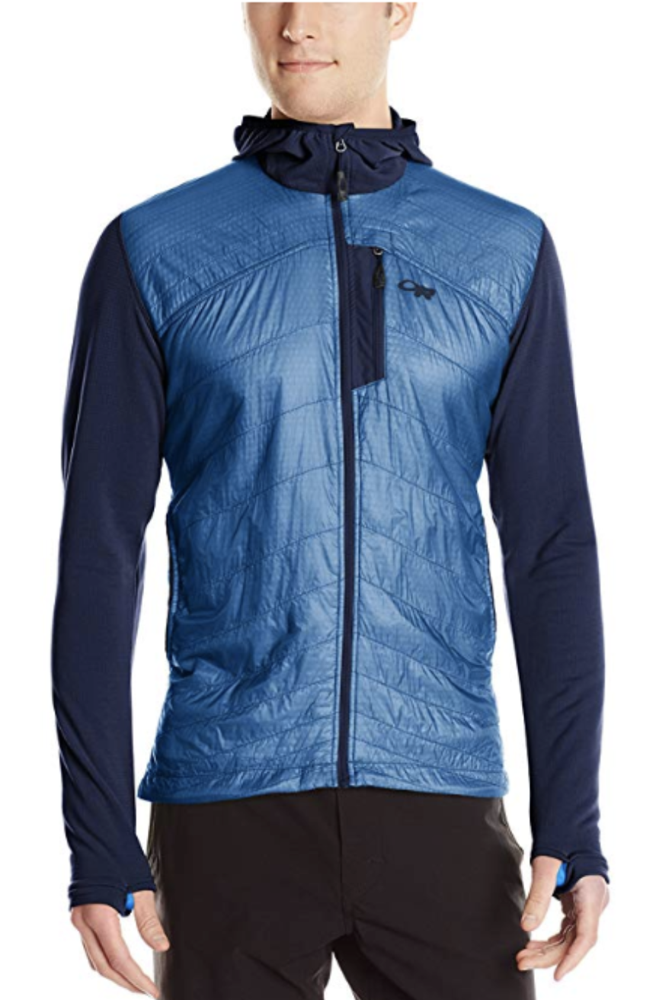
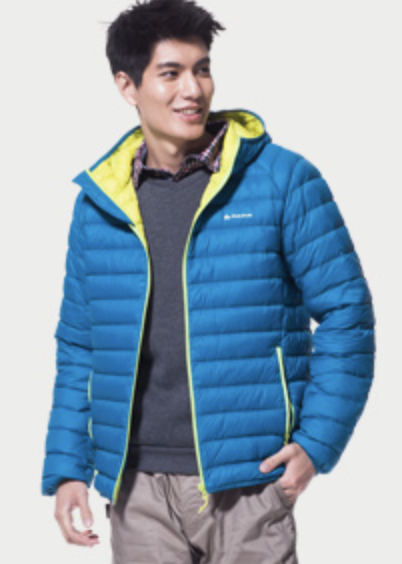

| 品牌 |
型号 |
图片 |
个人评价 |
标注特性、适用场合 |
购入价 |
吊牌价 |
购入时间 |
| Outdoor Reseach |
Foray Jacket |
 |
版型宽松，长短合适，4次小五台雪季攀登性能优秀 |
耐用、轻量和全防护，满足徒步和涉水运动中遭遇的雨雪风等恶劣天气。Goretex Paclite 40D面料，2.5层压胶，防水28000，透气15000；中雪，暴雨5小时 |
999 |
1999 |
201507天猫喜马拉雅专营店 |
| Gore Wear |
C5 |
|
2.5层硬壳的轻薄款 |
男士多功能夹克,适合在凉爽天气条件下骑自行车的人
舒适贴合 / 骑行*剪裁，反光细节
GORE-TEX Active 技术:防水、防风、极其透气 |
|
|
2021亚马逊 |
| Mammut |
Kento Light |
|
极轻硬壳，适合雪线下的越野跑比赛 |
全能的硬壳夹克。 Kento Light HS Hooded Jacket Men 采用极简设计,追求轻便性。 超轻、压缩。 适用于攀岩、鼠标、青少年、滑雪运动员、远足、骑行、上班等各种场合。 防水性和透气性优异的防水防护夹克。 Merit • 超轻的紧凑• 防水性 • 优异的透气性 • 缝制图案: Athletic Fit • 耐水压: 26000 mm • 重量: 145 g特点 • 耐水压: 26,000 mm • 透湿性: 27,000 g/m2/24h • 只需一次拉伸,可横向调节的加固帽檐 D。 • 防水前拉链 • 带防水拉链的隐藏式胸口袋 • 改善贴合感的弹性下摆和袖口• 轻便小巧• 为您的背包增添夹克。 |
|
|
2022亚马逊 |
| Millet |
菲茨罗伊 |
|
防水性能底下 |
2.5层压胶，防水透气15000 |
|
|
2021亚马逊 |
| Quechua |
2.5层硬壳 |
|
|
|
|
|
2020迪卡侬实体店 |
| Black Yak |
40周年纪念款(Yak Soul 牦牛之魂) |
|
YakTech面料（具体参数无），2层压胶；估计防水透气8000，中雪，暴雨2小时 |
|
499 |
1698 |
201509李光胤赠生日 |
| Black Yak |
1JK99-FPM557（配抓绒） |
|
Gore-tex Performance Shell 2L，估计防水10000，透气20000；小雪；小雨3小时 |
|
599 |
1998 |
201510上品折扣中关村 |
| Fjallraven |
长风衣 |
|
|
|
554 |
2999 |
201608亚马逊 |
| Merrell |
|
|
轻量，柔软，结合硬壳软壳各种优点 |
薄风衣；WindStopper面料；自测防水3000，透气10000 |
479 |
1498 |
201411天猫merrell旗舰店 |
| 品牌 |
型号 |
图片 |
个人评价 |
标注特性、适用场合 |
购入价 |
吊牌价 |
购入时间 |
| Outdoor Research |
Deviator Hoody帝威 |
 |
259 g 超级合身，较薄，适合冬季慢跑外层，春秋季登山外层，冬季低海拔登山外层，冬季中高海拔中间层 |
尖端的获奖保暖服（2015Backpacker Editors' Choice、2015Running World推荐装备。带有轻量隔热层的Deviator连帽服，结合了最前沿的面料和Polartec Alpha隔热技术，以及我们的Hybrid Mapped Construction复合式构造，在最需要的地方提供最完美合适的透气度和保暖性。这种采用最先进技术的保暖层，具有快干性能，有效保暖，同时又使空气在整个躯干部位流通循环，提供不可思议的透气性。帽兜、衣袖和背部镶板采用Polartec Power Dry High Efficiency面料，吸汗排湿，带来持续舒适。 |
543.61 |
1598 |
201810亚马逊自营 |
| Simond |
棉-软壳-抓绒混合面料夹克 |
|
在所有品牌复合型服装中能排前3（仅就设计而言）。看到图片那一刻就下了单。 |
适用于攀登和滑雪，建议在2℃以上气温时穿着。混合面料夹克，多种面料制成。填料 / 弹力软壳 / 摇粒绒。这些面料用在重点部位的拼接面料中。风帽带围巾，更防风。各个面料都位于夹克上需要它们对应功能的部位。胸、背、上臂填料密度达100克/平方米，有效保暖。前臂和夹克下方有软壳，可有效保护与安全带和岩石表面接触的部位。活动自如，腋下和背部的弹力薄摇粒绒有效控温。双面料软壳风帽搭配了一个内置围脖，风大时为你提供防寒防风保护。通常将头盔戴在风帽外面，不过软壳面料非常具有弹性，因此也可兼容佩戴的头盔。双向前开式拉链，让你可轻松穿着安全带。按扣附着到夹克底部，拉起拉链时扣上。内侧有拉链袋，可储物 |
299 |
299 |
201810迪卡侬官网（首次推出） |
| MARMOT |
神衣。土拨鼠 Driclime Windshirt |
|
版型很差，性能极度优秀。抗风、贴身、柔软、 |
MARMOT的driclime系列服装可谓户外服装史上的一个传说，得奖无数，其优良性能，卓越设计以为各家品牌仿效，但只有marmot的才称之为神衣。防泼水、抗风、透气，在不同的户外环境下均可以让您舒适，Marmot专利的DriClime排汗内里提供出色的透气性能和排汗能力，下颚部为Driclime薄绒，提高穿着舒适性，主拉链后防风帘保护，弹性袖口、弹性下摆，Marmot专利的“天使展翅”版型设计，保证上肢运动的灵活性，技术版型，人体工程学设计剪裁，可适合多种户外活动 |
599 |
999 |
201604上品中关村西 |
| 品牌 |
型号 |
图片 |
个人评价 |
标注特性、适用场合 |
购入价 |
吊牌价 |
购入时间 |
| Mammut |
Ultimate VII 连帽 |
|
买来装逼 |
防风、坚固、全年均可穿用，采用 Gore-Tex 研发的三层 Gore-Tex Infinium 材料
舒适的四向弹力面料
面料正面和背面采用再生聚酯纤维制成
面料背面采用开放式3D结构，可实现良好的吸湿排汗和透气性
经过处理的兜帽闭合非常整齐，配有加固帽舌和两点调节，配搭内置拉绳，不给风提供任何可乘之机 |
|
|
2022亚马逊 |
| Outdoor Research |
Ferrosi Hoody弗莱溪夹克（第1代） |
|
极度抗风，完全透气 |
OR运动员及员工的心爱之选。像魔法一样，绝不会过分燥热，同时又抗风、抗水、保暖。高度透气的软壳构造，提供充分的弹性以保证活动自由度。强韧耐磨损，提供粗糙崎岖的阿尔卑斯环境或者岩石地形下的保护性。适于全天攀登项目，或者秋季滑雪。（91% Cordura面料） |
587 |
998 |
201511天猫喜马拉雅专营店 |
| Outdoor Research |
Ferrosi Metro Hoody弗莱溪夹克（城市版） |
|
|
从健身房，到硅谷强大脑者的办公室，到处都可以看到这款连帽服的身影。Ferrosi Metro Hoody，休闲款技术性软壳连帽服，伴随你去往任何地方，从躺椅到峭壁，从畅饮比尔森啤酒到扣挂下一把快挂，都舒适而得体。 大字：更具通用性的FERROSI连帽服 86%尼龙，14%氨纶，90D弹性编织防撕面料 面料性能：抗水，抗风，透气，快干，轻量，活动镜像弹性 |
530 |
998 |
201704亚马逊自营 |
| Outdoor Research |
Ferrosi Hooded Jacket（第3代） |
|
|
盛名卓著。季复一季，Ferrosi Hooded Jacket一直是所有类型探险者的必备服装。这款坚韧而又透气的全能型轻量抗恶劣天气软壳，为你提供所有需要的性能，而又整洁流畅易于收纳。活动镜像弹性，自由伸展；抗磨损面料，长久保持鲜亮清新。不管是12月的行程，还是5月清晨的攀登，都可以带上这件经典夹克，这就是我们全年供货的原因所在 |
389.4 |
1298 |
201801亚马逊自营 |
| Klättermusen |
Mithril Jacket 秘银锁子甲 四向弹性防风软壳夹克 |
|
|
WindstretchTM180克/平方米；气流阻碍值MFR2；男款M码445克；功能极其强大的软壳上衣，具有良好的抗风性。尽管并不防水，这仍然是一件对探险者非常有用的夹克。颈部采用超细抓绒内衬，高领设计，带有内置防风护片的斜角拉链，两个拉链式衣袋，衣袖可覆盖手背，提供额外的舒适性与防护性，弹力袖口，可调式裙边，背部稍长，反光片设计 |
1074 |
1988 |
201511亚马逊自营 |
| Mountain Hardwear |
Fairing 蔚蓝色 |
|
超级抗风，超级保暖 |
|
450 |
1200 |
201412亚马逊自营 |
| Simond |
|
|
高弹性；不怎么防风保暖 |
|
199 |
199 |
201308天猫迪卡侬旗舰店 |
| 品牌 |
型号 |
图片 |
个人评价 |
标注特性、适用场合 |
购入价 |
吊牌价 |
购入时间 |
| Arcteryx |
Cerium LT HOODY |
|
|
其设计美观,具有非凡的保暖重量比,Cerium LT 连帽衫作为中间层或在凉爽干燥的条件下作为独立单品。
Arc'Teryx Essentials – 多功能高性能设计适用于各种活动和条件。
CERIUM - 流线型、简约轻便的技术羽绒隔热。 高保暖重量比
羽绒隔热 - *天然绝缘,压缩良好,提供出色的保暖性。
轻便 - 功能强大、简约的设计,重量轻。 |
|
|
|
| Marmot |
Guide |
|
|
充绒量185克，灰鹅绒，700蓬松度，拒水羽绒 |
|
|
2020天猫 |
| Wedze |
超厚滑雪羽绒 |
|
在北京零下20度且大风的环境下感觉温暖 |
1450g，充绒量L码494g（80%绒20%毛）-26℃~-9℃防泼水 |
479 |
1399 |
201511天猫迪卡侬旗舰店 |
| Black Diamond |
Hot Forge Hybrid Hoody复合式连帽服 |
|
保暖性超好，超级完美 |
【外壳】Pertex Quantum，DWR涂层（20d，35克/平米，100%尼龙）；【躯干隔热层】PrimaLoft Gold Insulation Down Blend羽绒混合隔热层；【帽兜，肩部和胳膊隔热层】PrimaLoft Gold（60克/平米）；【衬里】Pertex Quantum防撕面料，DWR涂层（20d，35克/平米，100%尼龙） |
999 |
2799 |
201712亚马逊自营 |
| Outdoor Research |
（2016版）（蓝）M'S Cathode Hoody Jacket 卤素灯弹性防寒带帽夹克 |
|
|
376 g。 （2014版介绍）2014Outside杂志年度装备大奖获奖产品，Cathode连帽服，是***攀登和保护均宜的轻量保暖夹克。腋下Schoeller镶板，弹性透气，难点动作时伸展自如；抗水性PrimaLoftGold隔热层，让你在破晓的清冷和傍晚的狂风中保持温暖；再加上超级轻量的PertexQuantum表层，Cathode的复合式构造带来轻量、透气、保暖等兼顾的优势特征，使其成为潮湿寒冷阿尔卑斯环境下的行动的理想之选。材质：外壳和衬里PertexQuantum，100%尼龙，20D防撕面料/Schoeller，100%涤纶，75D弹性编织，双织镶板/PrimaLoftGold隔热层，100%涤纶，60克/平米HybridMappedConstruction复合式构造/轻量/Scheoeller弹性镶板/全可调帽兜，弹性材质镶板/内部前拉链挡风片/带拉链的前胸口袋/两个带拉链的侧口袋/左手口袋可作为收纳袋/袖口弹性滚条/下摆拉绳调节参数：（L）377克S-XL（XXL仅限黑色）/修身剪裁背中线长度：72厘米 |
645.66 |
1998 |
201810亚马逊自营 |
| Kailas |
|
|
|
Teflon拒水，800鹅绒，90%充绒量，双面穿 |
|
|
2020天猫 |
| Simond |
|
|
|
85%鸭绒，蓬松度660 |
224 |
399.9 |
201610天猫迪卡侬旗舰店 |
| Quechua |
|
 |
|
L码250克，84克羽绒，绒:羽=85:15，660-710蓬松度 |
149 |
399 |
201601天猫迪卡侬旗舰店 |
| High Rock 天石 |
（天兰）超薄羽绒 |
|
|
70g鸭绒，蓬松度500，20D尼龙，防水；四季携带备用 |
88 |
600 |
天猫七索户外 |
| High Rock 天石 |
（深蓝）羽绒 |
 |
|
90g鸭绒，充绒量75%，蓬松度500，20D尼龙，防水；四季携带备用 |
300 |
800 |
天猫旗舰店 |
| Shehe 极星 |
（橘黄/军绿）和田 |
|
|
130g鹅绒 |
240 |
1000 |
天猫旗舰店 |
| Shehe 极星 |
（黑）百灵，可拆袖子 |
|
|
90g灰鸭绒，含绒量80% |
99 |
888 |
天猫旗舰店 |
| Quechua |
羽绒背心 |
|
轻薄羽绒较厚款，羽绒密度较大 |
号称蓬松度800，绒85%，毛15%，总重量192g |
|
|
|